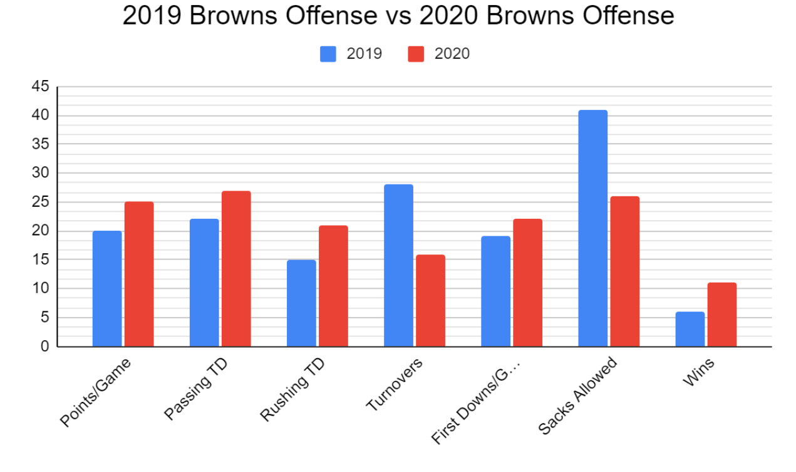

What Really Changed the Browns’ Season in 2020?
The offensive line. That’s what. The Browns’ offense was the exact same in most areas from 2019 to 2020. They still had Odell Beckham Jr. and Jarvis Landry, 2 All-Pro receivers. They still had Kareem Hunt and Nick…